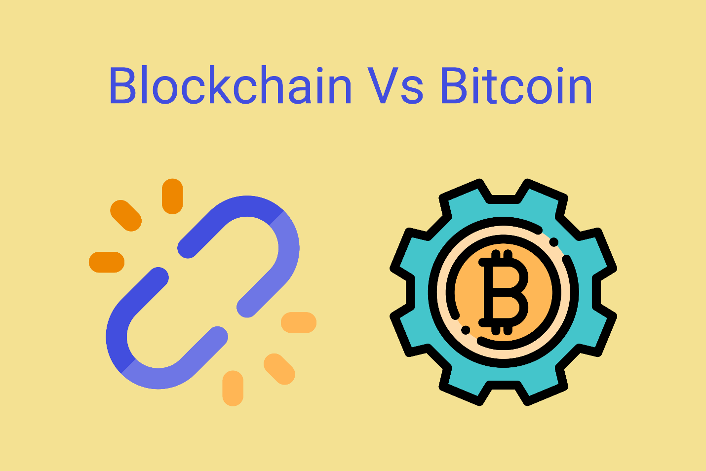

Bitcoin và Blockchain không phải là một
Sự phát triển của Bitcoin nói riêng, tiền mã hóa nói chung ngày càng lớn, nhưng một số người họ vẫn lầm tưởng Bitcoin và Blockchain là một. Thật sự Blockchain đã được tạo ra từ những ngày đầu của Internet, còn Bitcoin chỉ mới được tạo ra vào năm 2009.
Chúng ta cứ hiểu đơn giản thế này, Blockchain là một đại dương mênh mông còn crypto chỉ là một con cá bơi trong đại dương đó, ngoài con cá crypto chúng ta còn nhiều con cá khác bơi trong đại dương này.
Blockchain làm được nhiều thứ hơn các bạn có thể tượng tượng, còn Bitcoin chỉ làm được một công việc duy nhất là dùng để trao đổi giữa người với người không thể làm được việc gì khác.
Ứng dụng của Blockchain có thể làm gần như mọi thứ mà thế giới thực tập nói theo cách khác thì Blockchain có thể mã hóa thế giời từ tài chính, giao thông, giáo dục, ….
Mong bài viết có thể giúp bạn hiểu rõ về mối quan hệ giữa Blockchain và Bitcoin nói riêng, Crypto nói chung.

Bitcoin không phải là Cryptocurrency!!!
Tại sao tui lại nói như vậy nhỉ ? Bời vì đơn giản, Bitcoin là Cryptogold.
Nhiều nhà đầu tư, trader đều công nhận rằng nó là một loại vàng điện tử chứ không phải là một dạng đồng tiền, có rất nhiều lý do mà nhiều người nói Bitcoin là một dạng vàng điện tử.
1.Phí giao dịch cao, tốc độ giao dịch chậm
Không giống như các đồng tiền mã hóa hiện đại, Bitcoin đã “quá già” để có thể dùng để giao dịch như một đồng tiền. Tốc độ giao dịch của Bitcoin chỉ là 7 giao dịch cho mỗi giây, có thể tăng lên 100 giao dịch mỗi giây nhưng hiện tại cũng là quá chậm, kèm theo phí hàng chục đô cho mỗi giao dịch đều là những vật cản cho việc Bitcoin là đồng tiền để sử dụng.
Hiện tại mạng lới Lightning network được tạo ra cho Bitcoin cũng khó đưa đồng coin này trở thành một thứ để giao dịch hàng ngày.

2.Sự biến động giá thấp
Tại sao lại thấp? Rõ ràng có khi nó mất giá 20% một ngày mà? Đúng là vậy nhưng nếu đem so Bitcoin với những đồng coin khác thì con số không quá cao. Từng có đợt Bitcoin rớt 5% nhưng những altcoin lại rớt từ 8 cho đến 35%.
Rõ ràng đây là một thứ để lưu trữ giá trị hơn là dùng hàng ngày.
3.Sự đơn giản làm nên thành công của Bitcoin
Nếu bạn quá nhức đầu vì việc tìm xem đồng coin nào có hệ sinh thái tốt nhất, tốc độ tốt, vốn hóa thấp, bla bla.... nói thẳng bạn là tay mơ hoặc là một ông nhiều tiền chỉ muốn giữ giá trị đồng tiền nằm trong két sắt của bạn thì Bitcoin là thứ tốt nhất để.
Bạn sẽ không cần quan tâm tốc độ có nhanh như con Solana không hay phí thấp như Polygon, hoặc hệ sinh thái rộng như ETH và BSC thì bạn cứ nhắm thẳng Bitcoin, không nhắn thiết phải lo quá nhiều.
4.Kết lại
Bitcoin là cryptogold, một loại tài sản số nhằm để lưu trữ giá trị và không phải là một loại tiền tệ để có thể dùng thanh toán hàng ngày.